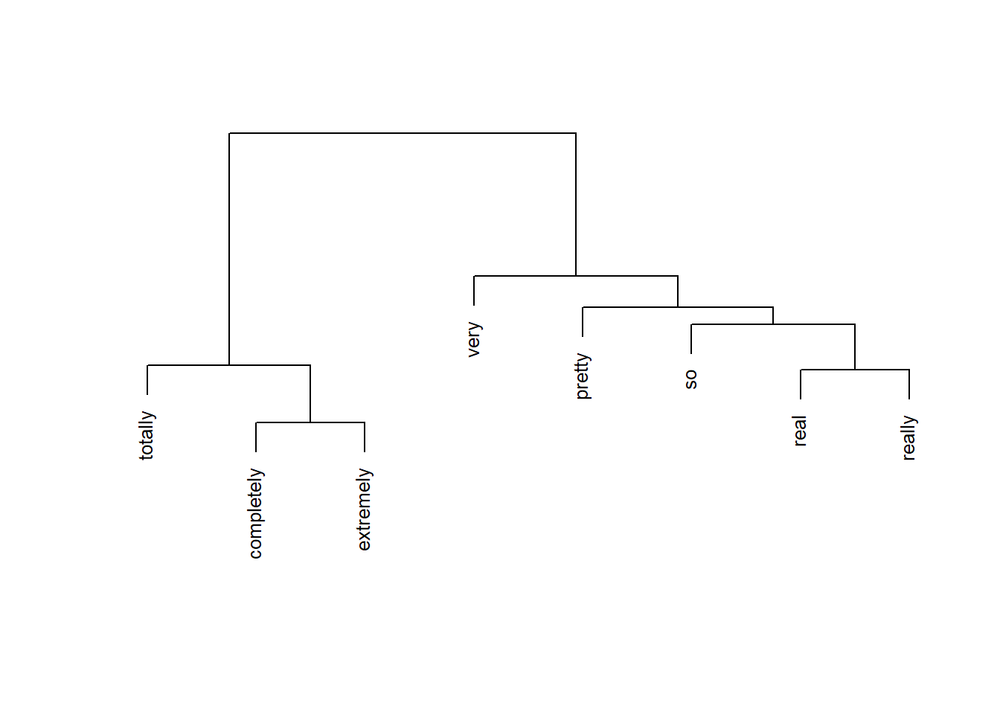

This tutorial introduces computational lexicography with R and shows how to use R to create dictionaries, find synonyms, and generate bilingual translation lexicons through statistical analysis of corpus data. While the initial examples focus on English, subsequent sections demonstrate how the approach generalises to other languages — including German — using the udpipe package, which supports more than 60 languages.
Traditionally, dictionaries are listings of words arranged alphabetically, providing information on definitions, usage, etymologies, pronunciations, translations, and related forms (Agnes, Goldman, and Soltis 2002; Steiner 1985). Computational lexicology is the branch of computational linguistics concerned with the computer-based study of lexicons and machine-readable dictionaries (Amsler 1981). Computational lexicography, the focus of this tutorial, is the use of computers in the construction of dictionaries. Although the two terms are sometimes used interchangeably, the distinction between studying a lexicon and building one is conceptually important.
The tutorial is structured around three increasingly complex tasks: (1) generating a basic annotated dictionary from corpus text using part-of-speech tagging; (2) identifying synonym candidates using distributional semantics and cosine similarity; and (3) building a bilingual translation lexicon from parallel text using co-occurrence statistics.
Learning Objectives
By the end of this tutorial you will be able to:
Generate a basic annotated dictionary from corpus text using part-of-speech tagging with udpipe
Correct, extend, and enrich dictionary entries with additional layers of information (sentiment, comments)
Build a term-document matrix from corpus co-occurrence data
Compute Positive Pointwise Mutual Information (PPMI) and cosine similarity between items
Use hierarchical clustering to visualise semantic similarity among words
Extract synonym candidates automatically from a cosine similarity matrix
Create a bilingual translation lexicon from parallel text using contingency-based association measures
Apply the same workflow to languages other than English using multilingual udpipe models
Prerequisite Tutorials
Before working through this tutorial, we recommend familiarity with the following:
Martin Schweinberger. 2026. Lexicography with R. The Language Technology and Data Analysis Laboratory (LADAL), The University of Queensland, Australia. url: https://ladal.edu.au/tutorials/lex/lex.html (Version 2026.05.01).
@manual{martinschweinberger2026lexicography,
author = {Martin Schweinberger},
title = {Lexicography with R},
year = {2026},
note = {https://ladal.edu.au/tutorials/lex/lex.html},
organization = {The Language Technology and Data Analysis Laboratory (LADAL), The University of Queensland, Australia},
edition = {2026.05.01},
doi = {}
}
library(checkdown) # interactive exerciseslibrary(dplyr) # data manipulationlibrary(stringr) # string processinglibrary(udpipe) # part-of-speech tagging (60+ languages)library(tidytext) # text mining and sentiment lexiconslibrary(tidyr) # data reshapinglibrary(coop) # cosine similaritylibrary(flextable) # formatted tableslibrary(plyr) # join operations for parallel data
Creating Dictionaries
Section Overview
What you will learn: How to use part-of-speech tagging to generate a structured dictionary from raw corpus text, and how to extend and enrich dictionary entries with sentiment information.
Key tools:udpipe for multilingual tagging, tidytext for sentiment lexicons, dplyr for table manipulation.
Loading and tagging the corpus text
In a first step, we load a text. We use George Orwell’s Nineteen Eighty-Four as the source text for our English dictionary.
Code
text <-readLines("tutorials/lex/data/orwell.txt") |>paste0(collapse =" ")# show the first 500 characters of the textsubstr(text, start =1, stop =500)
[1] "1984 George Orwell Part 1, Chapter 1 It was a bright cold day in April, and the clocks were striking thirteen. Winston Smith, his chin nuzzled into his breast in an effort to escape the vile wind, slipped quickly through the glass doors of Victory Mansions, though not quickly enough to prevent a swirl of gritty dust from entering along with him. The hallway smelt of boiled cabbage and old rag mats. At one end of it a coloured poster, too large for indoor display, had been tacked to the wall. It "
Next, we download a udpipe language model for English. The udpipe package supports more than 60 languages, making this approach directly transferable to other research contexts.
Code
# download English language model (run once, then use lex2 to load from disk)m_eng <- udpipe::udpipe_download_model(language ="english-ewt")
Once downloaded, load the model directly from disk:
Code
# load language model from diskm_eng <-udpipe_load_model(file = here::here("udpipemodels", "english-ewt-ud-2.5-191206.udpipe"))
We now apply the part-of-speech tagger to the full text. udpipe_annotate() returns a data frame with one row per token, including token form, lemma, universal POS tag, and dependency information:
doc_id token_id token lemma upos xpos
1 doc1 1 1984 1984 PROPN NNP
2 doc1 2 George George PROPN NNP
3 doc1 3 Orwell Orwell PROPN NNP
4 doc1 4 Part part PROPN NNP
5 doc1 5 1 1 NUM CD
6 doc1 6 , , PUNCT ,
7 doc1 7 Chapter chapter PROPN NNP
8 doc1 8 1 1 NUM CD
9 doc1 1 It it PRON PRP
10 doc1 2 was be AUX VBD
Generating the basic dictionary
We use the annotated data to generate a first, basic dictionary holding the word form (token), the part-of-speech tag (upos), the lemmatised word type (lemma), and the frequency with which that word form is used as that part-of-speech in the corpus. We begin by arranging entries by frequency, which is useful for spotting the most important vocabulary items quickly.
# A tibble: 10 × 4
token lemma upos frequency
<chr> <chr> <chr> <int>
1 the the DET 5249
2 of of ADP 2908
3 a a DET 2277
4 and and CCONJ 2064
5 was be AUX 1795
6 in in ADP 1446
7 to to PART 1336
8 it it PRON 1295
9 he he PRON 1270
10 had have AUX 1018
Dictionary conventions call for alphabetical ordering. We can switch to that with a single arrange() call:
# A tibble: 10 × 4
token lemma upos frequency
<chr> <chr> <chr> <int>
1 A a DET 107
2 A a NOUN 1
3 AND and CCONJ 2
4 Aaronson Aaronson PROPN 8
5 About about ADV 4
6 Above above ADP 2
7 Abruptly abruptly ADV 2
8 Actually actually ADV 13
9 Adam Adam PROPN 1
10 Admission admission NOUN 1
Tagging Accuracy and Manual Post-Editing
POS tagging is not perfect — some tokens will receive incorrect tags and some lemmas will be wrong. Even state-of-the-art taggers reach around 95–97% accuracy on standard text, which means visible errors are inevitable at this scale. The resulting dictionary requires manual review before publication. However, the computational workflow dramatically reduces the effort needed to produce a first draft: instead of generating thousands of entries from scratch, the researcher begins with a near-complete list and corrects errors rather than creating every entry.
Correcting and extending dictionary entries
One of the advantages of keeping dictionaries in R as data frames is that entries are easy to correct and extend programmatically. Below we demonstrate removing a spurious entry, correcting a POS tag, and adding an annotation column with custom notes.
Code
text_dict_ext <- text_dict |># remove spurious entry: 'a' tagged as NOUN dplyr::filter(!(lemma =="a"& upos =="NOUN")) |># correct POS tag: 'aback' should be PREP, not NOUN dplyr::mutate(upos =ifelse(lemma =="aback"& upos =="NOUN", "PREP", upos)) |># add custom comments dplyr::mutate(comment = dplyr::case_when( lemma =="a"~"also 'an' before vowels", lemma =="Aaronson"~"name of a character in the novel",TRUE~"" ))# inspecthead(text_dict_ext, 10)
# A tibble: 10 × 5
token lemma upos frequency comment
<chr> <chr> <chr> <int> <chr>
1 A a DET 107 "also 'an' before vowels"
2 AND and CCONJ 2 ""
3 Aaronson Aaronson PROPN 8 "name of a character in the novel"
4 About about ADV 4 ""
5 Above above ADP 2 ""
6 Abruptly abruptly ADV 2 ""
7 Actually actually ADV 13 ""
8 Adam Adam PROPN 1 ""
9 Admission admission NOUN 1 ""
10 Africa Africa PROPN 10 ""
Adding sentiment information
To make the dictionary more informative, we enrich each entry with sentiment information from the tidytext package. We use the Bing Liu lexicon(liu2012sentiment?), which classifies words as positive or negative.
# A tibble: 10 × 5
token lemma upos comment sentiment
<chr> <chr> <chr> <chr> <chr>
1 A a DET "also 'an' before vowels" ""
2 AND and CCONJ "" ""
3 Aaronson Aaronson PROPN "name of a character in the novel" ""
4 About about ADV "" ""
5 Above above ADP "" ""
6 Abruptly abruptly ADV "" "negative"
7 Actually actually ADV "" ""
8 Adam Adam PROPN "" ""
9 Admission admission NOUN "" ""
10 Africa Africa PROPN "" ""
The resulting extended dictionary now contains the token, lemma, POS tag, comment, and sentiment label — a richer lexical resource than the basic dictionary we started with, and one generated entirely automatically from corpus data.
Exercises: Creating Dictionaries
Q1. What is the difference between computational lexicology and computational lexicography?
Q2. After POS tagging, you notice that the word ‘run’ is sometimes tagged as VERB and sometimes as NOUN. Which dplyr approach is most appropriate to correct a specific erroneous tag?
Finding Synonyms: Creating a Thesaurus
Section Overview
What you will learn: How to use distributional semantics — co-occurrence statistics, PPMI weighting, and cosine similarity — to identify synonym candidates for a set of degree adverbs.
Why distributional methods? The basic assumption of distributional semantics is that words occurring in the same contexts tend to have similar meanings — the distributional hypothesis(Firth 1957). PPMI-weighted cosine similarity has been shown to outperform raw co-occurrence counts for semantic similarity tasks (Bullinaria and Levy 2007; Levshina 2015).
Another key task in lexicography is determining semantic relationships between words — in particular, whether two words are synonymous. In computational linguistics, such relationships are typically determined from collocational profiles, also called word vectors or word embeddings.
In this example, we investigate whether a set of degree adverbs (very, really, so, completely, totally, etc.) are synonymous — that is, whether they can be exchanged without substantially changing the meaning of the sentence. This is directly relevant to lexicography: if two adverbs have similar collocational profiles, a dictionary can link them as synonyms or near-synonyms.
Loading the degree adverb data
The dataset contains three columns: a pint column with the degree adverb, an adjs column with the adjective it modifies, and a remove column we do not need.
degree_adverb adjective
1 real bad
2 really nice
3 very good
4 really early
5 really bad
6 really bad
7 so long
8 really wonderful
9 pretty good
10 really easy
Building the term-document matrix
We construct a term-document matrix (TDM) showing how often each degree adverb co-occurred with each adjective. Rows are adjectives; columns are degree adverbs; each cell contains the co-occurrence count.
completely extremely pretty real really
able 0 1 0 0 0
actual 0 0 0 1 0
amazing 0 0 0 0 4
available 0 0 0 0 1
bad 0 0 1 2 3
Computing PPMI and cosine similarity
Raw co-occurrence counts are biased towards frequent words. Pointwise Mutual Information (PMI) corrects for this by comparing observed co-occurrence frequency to what would be expected if the two words were independent. Positive PMI (PPMI) replaces all negative PMI values with zero, which improves performance on semantic similarity tasks (Bullinaria and Levy 2007; Levshina 2015).
We then compute cosine similarity between the PPMI vectors of each degree adverb. Cosine similarity ranges from 0 (no shared context) to 1 (identical context profile).
Code
# compute expected values under independencetdm.exp <-chisq.test(tdm)$expected# calculate PMI and PPMIPMI <-log2(tdm / tdm.exp)PPMI <-ifelse(PMI <0, 0, PMI)# calculate cosine similarity between amplifier vectorscosinesimilarity <-cosine(PPMI)# inspectcosinesimilarity[1:5, 1:5]
We convert the cosine similarity matrix to a distance matrix and apply Ward’s hierarchical clustering to visualise the similarity structure.
Code
# find maximum similarity value that is not 1 (self-similarity)cosinesimilarity.test <-apply(cosinesimilarity, 1, function(x) { x <-ifelse(x ==1, 0, x)})maxval <-max(cosinesimilarity.test)# convert similarity to distanceamplifier.dist <-1- (cosinesimilarity / maxval)clustd <-as.dist(amplifier.dist)
Code
# hierarchical clustering with Ward's methodcd <-hclust(clustd, method ="ward.D")# plotplot(cd, main ="", sub ="", yaxt ="n", ylab ="", xlab ="", cex = .8)

The dendrogram reveals interpretable clusters. Completely, extremely, and totally form a cluster of strong, absolute intensifiers that are interchangeable with each other but not with milder adverbs. Real and really cluster together as colloquial variants. This structure matches what an experienced lexicographer would expect, and the method has recovered it automatically from corpus data.
Extracting synonym candidates
To extract synonyms automatically, we find the most similar adverb for each entry in the cosine similarity matrix: we replace diagonal values (each word’s perfect similarity to itself) with 0, then look up the column with the highest remaining value.
A Note on Syntactic Context
The synonym candidates here are based purely on collocational profile similarity. A complete synonym analysis would also consider syntactic context: very and so have similar profiles, but so is strongly disfavoured in attributive position (a so great tutorial is unusual, whereas a very great tutorial is fine). A full lexicographic treatment would require filtering by syntactic function before computing similarity.
Code
# build synonym table: replace self-similarity (1s) with 0syntb <- cosinesimilarity |>as.data.frame() |> dplyr::mutate(word =colnames(cosinesimilarity)) |> dplyr::mutate(across(where(is.numeric), ~replace(., . ==1, 0)))# extract the most similar item for each wordsyntb <- syntb |> dplyr::mutate(synonym =colnames(syntb)[apply(syntb, 1, which.max)]) |> dplyr::select(word, synonym)syntb
word synonym
completely completely extremely
extremely extremely completely
pretty pretty real
real real really
really really real
so so real
totally totally completely
very very so
The results confirm the clustering: completely is paired with totally and vice versa, real is paired with really, and very is paired with pretty — consistent with both prior expectations and the dendrogram above.
For further reading on semantic vector space modelling, Rajeg, Denistia, and Musgrave (2019) provide an accessible introduction, and Levshina (2015) offers a comprehensive treatment of distributional methods for corpus linguists.
Exercises: Finding Synonyms
Q1. Why is Positive PMI (PPMI) preferred over raw PMI for computing semantic similarity?
Q2. In the dendrogram, completely, extremely, and totally form a tight cluster. What does this tell us lexicographically?
Creating Bilingual Dictionaries
Section Overview
What you will learn: How to generate a bilingual translation lexicon from parallel text using word co-occurrence statistics and contingency-based association measures.
Why this matters: Data-driven translation lexicons can be generated for any language pair for which parallel data exists — including low-resource languages where commercial dictionaries are unavailable.
Translation dictionaries map words in one language to their counterparts in another. If a German word and an English word tend to co-occur across sentence-translation pairs, they are likely translations of each other. The quality of the result depends on the quantity and alignment quality of the parallel data, and grammatical differences between languages introduce additional challenges.
Loading parallel text
We load a sample of German sentences and their English translations. Each line contains a German sentence and its English translation, separated by the string — (a spaced em dash).
Wie lange lebst du schon in Brisbane? — How long have you been living in Brisbane?
Leben Sie schon lange hier? — Have you been living here for long?
Welcher Bus geht nach Brisbane? — Which bus goes to Brisbane?
Von welchem Gleis aus fährt der Zug? — Which platform is the train leaving from?
Ist dies der Bus nach Toowong? — Is this the bus going to Toowong?
Separating German and English sentences
We split the parallel data into two tables — one for German, one for English — each indexed by sentence number. The sentence index preserves the alignment between source and target sentences.
Code
# separate German and English, remove punctuationgerman <- stringr::str_remove_all(translations, " [-\u2014\u2013] .*") |> stringr::str_remove_all("[[:punct:]]")english <- stringr::str_remove_all(translations, ".* [-\u2014\u2013] ") |> stringr::str_remove_all("[[:punct:]]")sentence <-1:length(german)germantb <-data.frame(sentence, german)englishtb <-data.frame(sentence, english)
sentence
german
1
Guten Tag
2
Guten Morgen
3
Guten Abend
4
Hallo
5
Wo kommst du her
6
Woher kommen Sie
7
Ich bin aus Hamburg
8
Ich komme aus Hamburg
9
Ich bin Deutscher
10
Schön Sie zu treffen
11
Wie lange lebst du schon in Brisbane
12
Leben Sie schon lange hier
13
Welcher Bus geht nach Brisbane
14
Von welchem Gleis aus fährt der Zug
15
Ist dies der Bus nach Toowong
Creating word-level co-occurrence pairs
We tokenise the sentences into individual words and cross-join German and English tokens within each sentence. Each row of the result represents a German–English word pair that co-occurred in the same sentence translation unit.
Code
# tokenise German sentencesgerman_tokens <- germantb |> tidytext::unnest_tokens(word, german)# join English sentences by sentence id, then tokenise Englishtranstb <- german_tokens |> dplyr::left_join(englishtb, by ="sentence") |> tidytext::unnest_tokens(trans, english) |> dplyr::rename(german = word, english = trans) |> dplyr::select(german, english) |> dplyr::mutate(german =factor(german),english =factor(english) )
german
english
guten
good
guten
day
tag
good
tag
day
guten
good
guten
morning
morgen
good
morgen
morning
guten
good
guten
evening
abend
good
abend
evening
hallo
hello
wo
where
wo
are
Building the co-occurrence matrix
From the word-pair table we construct a co-occurrence matrix: rows are English words, columns are German words, and each cell is the count of how many times that German–English pair appeared in the same sentence pair.
a accident all am ambulance an and any anything are
ab 0 0 0 0 0 0 0 0 0 0
abend 0 0 0 0 0 0 0 0 0 0
allem 0 0 0 0 0 0 0 0 0 0
alles 0 0 1 0 0 0 0 0 0 0
am 0 0 0 0 0 0 0 0 0 0
an 0 0 0 0 0 0 0 0 0 0
anderen 1 0 0 0 0 0 0 0 0 0
apotheke 1 0 0 1 0 0 0 0 0 0
arzt 1 0 0 0 0 0 0 0 0 0
auch 3 0 0 0 0 0 0 0 1 0
Computing association strength
We use Fisher’s Exact Test and the phi coefficient (φ) to measure the statistical association between each German–English word pair, controlling for marginal frequencies — the same approach used in keyword analysis and collocation research.
We compute Fisher’s Exact Test and the phi coefficient for each word pair, retain only pairs where observed co-occurrence exceeds expected (genuine positive associations), and rank by phi.
The results show that even a small parallel corpus yields reasonable translation candidates. The top-ranked pairs align well with genuine translation equivalents. Mismatches further down the ranking illustrate the need for more data to disambiguate polysemous words and handle idiomatic expressions. The approach scales directly: with a larger parallel corpus, accuracy improves substantially.
Exercises: Bilingual Dictionaries
Q1. Why is raw co-occurrence count insufficient for identifying translation equivalents, and what statistical measure does this tutorial use instead?
Generating Dictionaries for Other Languages
Section Overview
What you will learn: How to apply the same dictionary-generation pipeline to a language other than English, using German as a demonstration.
Key point: Because udpipe supports more than 60 languages, the workflow transfers directly to any supported language by simply changing the model file.
The procedure for generating dictionaries can easily be applied to languages other than English. The only change required is the udpipe language model. Here we demonstrate using a sample of the Brothers Grimm fairy tales as a German-language corpus.
Loading a German corpus
Code
grimm <-readLines("tutorials/lex/data/GrimmsFairytales.txt",encoding ="latin1") |>paste0(collapse =" ")# show the first 200 characterssubstr(grimm, start =1, stop =200)
[1] "Der Froschkönig oder der eiserne Heinrich Ein Märchen der Brüder Grimm Brüder Grimm In den alten Zeiten, wo das Wünschen noch geholfen hat, lebte ein König, dessen Töchter waren alle schön; aber die"
Downloading and loading a German model
Code
# download German model (run once)udpipe::udpipe_download_model(language ="german-hdt")
Code
# load German model from diskm_ger <-udpipe_load_model(file = here::here("udpipemodels","german-gsd-ud-2.5-191206.udpipe"))
Generating the German dictionary
The tagging, filtering, and summarising steps are identical to the English pipeline — only the model and input text change:
The result is a German dictionary derived from the Grimm fairy tales, holding the word form, POS tag, lemma, and frequency — the same structure as the English dictionary. The same enrichment steps (adding sentiment, comments, translations) can be applied directly.
Going Further: Crowd-Sourced Dictionaries
Section Overview
What you will learn: How the dictionary-generation approach described in this tutorial can be extended to collaborative, crowd-sourced dictionary projects using Git and GitHub.
The dictionary-generation workflow presented in this tutorial can be extended to crowd-sourced dictionary projects. By hosting the dictionary in a Git repository on GitHub or GitLab, you can allow any researcher with an account to contribute entries or corrections.
Contributors fork the repository, make their additions or corrections, and submit a pull request. The repository owner reviews each proposed change and decides whether to accept it — maintaining quality control while enabling distributed contribution. Because Git is a version control system, any erroneously accepted change can be reverted instantly.
This is particularly well-suited to the computational lexicography workflow presented here. The R-generated dictionary provides an accurate, automatically produced starting point; the crowd-sourcing layer adds human expert review, corrections, and extensions that automated methods cannot provide. RStudio’s built-in Git integration makes this pipeline accessible without command-line expertise — see Happy Git and GitHub for the useR for a practical guide.
Citation & Session Info
Citation
Martin Schweinberger. 2026. Lexicography with R. The Language Technology and Data Analysis Laboratory (LADAL), The University of Queensland, Australia. url: https://ladal.edu.au/tutorials/lex/lex.html (Version 2026.05.01).
@manual{martinschweinberger2026lexicography,
author = {Martin Schweinberger},
title = {Lexicography with R},
year = {2026},
note = {https://ladal.edu.au/tutorials/lex/lex.html},
organization = {The Language Technology and Data Analysis Laboratory (LADAL), The University of Queensland, Australia},
edition = {2026.05.01},
doi = {}
}
This tutorial was revised and expanded with the assistance of Claude (claude.ai), a large language model created by Anthropic. Claude was used to fix two deprecated function calls (mutate_each() replaced with mutate(across(...)) and str_remove_all(., "[:punct:]") corrected to str_remove_all("[[:punct:]]")), rewrite . placeholder usage for compatibility with the native |> pipe (including removing the plyr::join(., ...) call by replacing it with a two-step left_join), move library(plyr) to the setup chunk, add Learning Objectives and Prerequisite callouts, replace <div class="warning"> and <div class="question"> HTML blocks with Quarto callouts, add section overview callouts, add six checkdown exercises, expand and clarify the prose explanations throughout, standardise chunk labels, fix the BibTeX comma bug, and align the document style with other LADAL tutorials. The YAML header and all content after the Citation heading were left unchanged. All content was reviewed and approved by Martin Schweinberger, who takes full responsibility for the tutorial’s accuracy and pedagogical appropriateness.
Agnes, Michael, Jonathan L Goldman, and Katherine Soltis. 2002. Webster’s New World Compact Desk Dictionary and Style Guide. Hungry Minds.
Amsler, Robert Alfred. 1981. The Structure of the Merriam-Webster Pocket Dictionary. Austin, TX: he University of Texas at Austin.
Bullinaria, J. A., and J. P. Levy. 2007. “Extracting Semantic Representations from Word Co-Occurrence Statistics: A Computational Study.”Behavior Research Methods 39: 510–26. https://doi.org/https://doi.org/10.3758/bf03193020.
Firth, John R. 1957. “A Synopsis of Linguistic Theory, 1930–1955.” In Studies in Linguistic Analysis, 1–32. Oxford: Blackwell.
Levshina, Natalia. 2015. How to Do Linguistics with r: Data Exploration and Statistical Analysis. Amsterdam: John Benjamins Publishing Company.
Rajeg, Gede Primahadi Wijaya, Karlina Denistia, and Simon Musgrave. 2019. “R Markdown Notebook for Vector Space Model and the Usage Patterns of Indonesian Denominal Verbs.”https://doi.org/10.6084/m9.figshare.9970205.v1.
Steiner, Roger J. 1985. “Dictionaries. The Art and Craft of Lexicography.”Dictionaries: Journal of the Dictionary Society of North America 7 (1): 294–300. https://doi.org/https://doi.org/10.2307/3735704.
Source Code
---title: "Lexicography with R"author: "Martin Schweinberger"date: "2026"params: title: "Lexicography with R" author: "Martin Schweinberger" year: "2026" version: "2026.05.01" url: "https://ladal.edu.au/tutorials/lex/lex.html" institution: "The Language Technology and Data Analysis Laboratory (LADAL), The University of Queensland, Australia" description: "This case study tutorial demonstrates how to create dictionaries computationally in R, covering synonym finding, semantic similarity measures, and the automatic generation of dictionary entries from corpus data. It is aimed at researchers in lexicography, computational linguistics, and digital humanities who want to apply corpus and semantic methods to dictionary creation." doi: ""format: html: toc: true toc-depth: 4 code-fold: show code-tools: true theme: cosmo---```{r setup, echo=FALSE, message=FALSE, warning=FALSE}library(checkdown)library(dplyr)library(stringr)library(udpipe)library(tidytext)library(tidyr)library(coop)library(flextable)library(plyr)options(stringsAsFactors = FALSE)options("scipen" = 100, "digits" = 4)```{ width=100% }# Introduction {#intro}{ width=15% style="float:right; padding:10px" }This tutorial introduces **computational lexicography with R** and shows how to use R to create dictionaries, find synonyms, and generate bilingual translation lexicons through statistical analysis of corpus data. While the initial examples focus on English, subsequent sections demonstrate how the approach generalises to other languages — including German — using the `udpipe` package, which supports more than 60 languages.Traditionally, dictionaries are listings of words arranged alphabetically, providing information on definitions, usage, etymologies, pronunciations, translations, and related forms [@agnes2002webster; @steiner1985dictionaries]. *Computational lexicology* is the branch of computational linguistics concerned with the computer-based study of lexicons and machine-readable dictionaries [@amsler1981structure]. *Computational lexicography*, the focus of this tutorial, is the use of computers in the *construction* of dictionaries. Although the two terms are sometimes used interchangeably, the distinction between studying a lexicon and building one is conceptually important.The tutorial is structured around three increasingly complex tasks: (1) generating a basic annotated dictionary from corpus text using part-of-speech tagging; (2) identifying synonym candidates using distributional semantics and cosine similarity; and (3) building a bilingual translation lexicon from parallel text using co-occurrence statistics.::: {.callout-note}## Learning ObjectivesBy the end of this tutorial you will be able to:1. Generate a basic annotated dictionary from corpus text using part-of-speech tagging with `udpipe`2. Correct, extend, and enrich dictionary entries with additional layers of information (sentiment, comments)3. Build a term-document matrix from corpus co-occurrence data4. Compute Positive Pointwise Mutual Information (PPMI) and cosine similarity between items5. Use hierarchical clustering to visualise semantic similarity among words6. Extract synonym candidates automatically from a cosine similarity matrix7. Create a bilingual translation lexicon from parallel text using contingency-based association measures8. Apply the same workflow to languages other than English using multilingual `udpipe` models:::::: {.callout-note}## Prerequisite TutorialsBefore working through this tutorial, we recommend familiarity with the following:- [Getting Started with R](/tutorials/intror/intror.html)- [Loading, Saving, and Generating Data in R](/tutorials/load/load.html)- [String Processing in R](/tutorials/string/string.html)- [Regular Expressions in R](/tutorials/regex/regex.html)- [Handling Tables in R](/tutorials/table/table.html)- [Basic Inferential Statistics](/tutorials/basicstatz/basicstatz.html)- [Introduction to Text Analysis: Practical Overview](/tutorials/textanalysis/textanalysis.html)- [Tagging and Parsing](/tutorials/postag/postag.html):::::: {.callout-note}## Citation```{r citation-callout, echo=FALSE, results='asis'}cat( params$author, ". ", params$year, ". *", params$title, "*. ", params$institution, ". ", "url: ", params$url, " ", "(Version ", params$version, ").", sep = "")``````{r citation-bibtex, echo=FALSE, results='asis'}key <- paste0( tolower(gsub(" ", "", gsub(",.*", "", params$author))), params$year, tolower(gsub("[^a-zA-Z]", "", strsplit(params$title, " ")[[1]][1])))cat("```\n")cat("@manual{", key, ",\n", sep = "")cat(" author = {", params$author, "},\n", sep = "")cat(" title = {", params$title, "},\n", sep = "")cat(" year = {", params$year, "},\n", sep = "")cat(" note = {", params$url, "},\n", sep = "")cat(" organization = {", params$institution, "},\n", sep = "")cat(" edition = {", params$version, "},\n", sep = "")cat(" doi = {", params$doi, "}\n", sep = "")cat("}\n```\n")```:::---## Preparation and Session Set-up {-}Install required packages once:```{r prep1, echo=TRUE, eval=FALSE, message=FALSE, warning=FALSE}install.packages("dplyr")install.packages("stringr")install.packages("udpipe")install.packages("tidytext")install.packages("tidyr")install.packages("coop")install.packages("flextable")install.packages("textdata")install.packages("plyr")install.packages("checkdown")```Load packages for this session:```{r prep2, echo=TRUE, message=FALSE, warning=FALSE}library(checkdown) # interactive exerciseslibrary(dplyr) # data manipulationlibrary(stringr) # string processinglibrary(udpipe) # part-of-speech tagging (60+ languages)library(tidytext) # text mining and sentiment lexiconslibrary(tidyr) # data reshapinglibrary(coop) # cosine similaritylibrary(flextable) # formatted tableslibrary(plyr) # join operations for parallel data```---# Creating Dictionaries {#dictionaries}::: {.callout-note}## Section Overview**What you will learn:** How to use part-of-speech tagging to generate a structured dictionary from raw corpus text, and how to extend and enrich dictionary entries with sentiment information.**Key tools:** `udpipe` for multilingual tagging, `tidytext` for sentiment lexicons, `dplyr` for table manipulation.:::## Loading and tagging the corpus text {-}In a first step, we load a text. We use George Orwell's *Nineteen Eighty-Four* as the source text for our English dictionary.```{r ld, message=FALSE, warning=FALSE}text <- readLines("tutorials/lex/data/orwell.txt") |> paste0(collapse = " ")# show the first 500 characters of the textsubstr(text, start = 1, stop = 500)```Next, we download a `udpipe` language model for English. The `udpipe` package supports more than 60 languages, making this approach directly transferable to other research contexts.```{r lex1, eval=FALSE, message=FALSE, warning=FALSE}# download English language model (run once, then use lex2 to load from disk)m_eng <- udpipe::udpipe_download_model(language = "english-ewt")```Once downloaded, load the model directly from disk:```{r lex2, message=FALSE, warning=FALSE}# load language model from diskm_eng <- udpipe_load_model(file = here::here("udpipemodels", "english-ewt-ud-2.5-191206.udpipe"))```We now apply the part-of-speech tagger to the full text. `udpipe_annotate()` returns a data frame with one row per token, including token form, lemma, universal POS tag, and dependency information:```{r lex3, message=FALSE, warning=FALSE}# tokenise, tag, and parsetext_ann <- udpipe::udpipe_annotate(m_eng, x = text) |> as.data.frame() |> dplyr::select( -sentence, -paragraph_id, -sentence_id, -feats, -head_token_id, -dep_rel, -deps, -misc )# inspecthead(text_ann, 10)```## Generating the basic dictionary {-}We use the annotated data to generate a first, basic dictionary holding the word form (*token*), the part-of-speech tag (*upos*), the lemmatised word type (*lemma*), and the frequency with which that word form is used as that part-of-speech in the corpus. We begin by arranging entries by frequency, which is useful for spotting the most important vocabulary items quickly.```{r lex7, message=FALSE, warning=FALSE}text_dict_raw <- text_ann |> # remove non-word tokens (punctuation, symbols) dplyr::filter(!stringr::str_detect(token, "\\W")) |> # remove numeric tokens dplyr::filter(!stringr::str_detect(token, "[0-9]")) |> dplyr::group_by(token, lemma, upos) |> dplyr::summarise(frequency = dplyr::n(), .groups = "drop") |> dplyr::arrange(-frequency)# inspecthead(text_dict_raw, 10)```Dictionary conventions call for alphabetical ordering. We can switch to that with a single `arrange()` call:```{r lex8, message=FALSE, warning=FALSE}text_dict <- text_dict_raw |> dplyr::arrange(token)# inspecthead(text_dict, 10)```::: {.callout-note}## Tagging Accuracy and Manual Post-EditingPOS tagging is not perfect — some tokens will receive incorrect tags and some lemmas will be wrong. Even state-of-the-art taggers reach around 95–97% accuracy on standard text, which means visible errors are inevitable at this scale. The resulting dictionary requires manual review before publication. However, the computational workflow dramatically reduces the effort needed to produce a first draft: instead of generating thousands of entries from scratch, the researcher begins with a near-complete list and corrects errors rather than creating every entry.:::## Correcting and extending dictionary entries {-}One of the advantages of keeping dictionaries in R as data frames is that entries are easy to correct and extend programmatically. Below we demonstrate removing a spurious entry, correcting a POS tag, and adding an annotation column with custom notes.```{r ext1, message=FALSE, warning=FALSE}text_dict_ext <- text_dict |> # remove spurious entry: 'a' tagged as NOUN dplyr::filter(!(lemma == "a" & upos == "NOUN")) |> # correct POS tag: 'aback' should be PREP, not NOUN dplyr::mutate(upos = ifelse(lemma == "aback" & upos == "NOUN", "PREP", upos)) |> # add custom comments dplyr::mutate(comment = dplyr::case_when( lemma == "a" ~ "also 'an' before vowels", lemma == "Aaronson" ~ "name of a character in the novel", TRUE ~ "" ))# inspecthead(text_dict_ext, 10)```## Adding sentiment information {-}To make the dictionary more informative, we enrich each entry with sentiment information from the `tidytext` package. We use the **Bing Liu lexicon** [@liu2012sentiment], which classifies words as positive or negative.```{r ext3, message=FALSE, warning=FALSE}text_dict_snt <- text_dict_ext |> dplyr::mutate(word = lemma) |> dplyr::left_join(get_sentiments("bing"), by = "word") |> dplyr::group_by(token, lemma, upos, comment) |> dplyr::summarise( sentiment = paste0(unique(sentiment[!is.na(sentiment)]), collapse = ", "), .groups = "drop" )# inspecthead(text_dict_snt, 10)```The resulting extended dictionary now contains the token, lemma, POS tag, comment, and sentiment label — a richer lexical resource than the basic dictionary we started with, and one generated entirely automatically from corpus data.---::: {.callout-tip}## Exercises: Creating Dictionaries:::**Q1. What is the difference between computational lexicology and computational lexicography?**```{r}#| echo: false#| label: "LEX_Q1"check_question("Computational lexicology uses computers to study lexicons; computational lexicography uses computers to build dictionaries",options =c("Computational lexicology uses computers to study lexicons; computational lexicography uses computers to build dictionaries","They are interchangeable terms for the same activity","Lexicology focuses on corpora; lexicography focuses on grammar","Lexicography studies historical word forms; lexicology studies modern ones" ),type ="radio",q_id ="LEX_Q1",random_answer_order =TRUE,button_label ="Check answer",right ="Correct! Computational lexicology is concerned with the computer-based study of existing machine-readable dictionaries and lexicons. Computational lexicography, the focus of this tutorial, is the use of computers to actually construct dictionaries — a distinction that parallels the general one between descriptive linguistics (studying language as it is) and applied linguistics (using that knowledge to produce tools and resources).",wrong ="Think about the -logy vs. -graphy suffix distinction. Lexicology studies lexicons; lexicography writes or creates them. How does the computational prefix modify each?")```**Q2. After POS tagging, you notice that the word 'run' is sometimes tagged as VERB and sometimes as NOUN. Which `dplyr` approach is most appropriate to correct a specific erroneous tag?**```{r}#| echo: false#| label: "LEX_Q2"check_question("dplyr::mutate() with ifelse() — target the specific lemma and wrong tag combination and replace with the correct tag",options =c("dplyr::mutate() with ifelse() — target the specific lemma and wrong tag combination and replace with the correct tag","dplyr::filter() — remove all rows where upos == 'NOUN'","dplyr::arrange() — reorder so VERB tags appear before NOUN tags","dplyr::select() — drop the upos column and add a new one" ),type ="radio",q_id ="LEX_Q2",random_answer_order =TRUE,button_label ="Check answer",right ="Correct! dplyr::mutate() with ifelse() (or case_when() for multiple conditions) lets you target a specific row — identified by both lemma and incorrect upos — and replace only that tag, leaving all other rows unchanged. filter() would remove all noun instances of 'run', which you may not want. arrange() and select() do not modify cell values.",wrong ="You want to change a specific value in a specific row without removing any rows. Which dplyr verb modifies existing column values?")```---# Finding Synonyms: Creating a Thesaurus {#synonyms}::: {.callout-note}## Section Overview**What you will learn:** How to use distributional semantics — co-occurrence statistics, PPMI weighting, and cosine similarity — to identify synonym candidates for a set of degree adverbs.**Key concepts:** Term-document matrix, Pointwise Mutual Information (PMI), Positive PMI (PPMI), cosine similarity, hierarchical clustering.**Why distributional methods?** The basic assumption of distributional semantics is that words occurring in the same contexts tend to have similar meanings — the *distributional hypothesis* [@firth1957synopsis]. PPMI-weighted cosine similarity has been shown to outperform raw co-occurrence counts for semantic similarity tasks [@bullinaria2007extracting; @levshina2015linguistics].:::Another key task in lexicography is determining semantic relationships between words — in particular, whether two words are synonymous. In computational linguistics, such relationships are typically determined from collocational profiles, also called *word vectors* or *word embeddings*.In this example, we investigate whether a set of **degree adverbs** (*very*, *really*, *so*, *completely*, *totally*, etc.) are synonymous — that is, whether they can be exchanged without substantially changing the meaning of the sentence. This is directly relevant to lexicography: if two adverbs have similar collocational profiles, a dictionary can link them as synonyms or near-synonyms.## Loading the degree adverb data {-}The dataset contains three columns: a *pint* column with the degree adverb, an *adjs* column with the adjective it modifies, and a *remove* column we do not need.```{r syn1, message=FALSE, warning=FALSE}degree_adverbs <- base::readRDS("tutorials/lex/data/dad.rda", "rb") |> dplyr::select(-remove) |> dplyr::rename( degree_adverb = pint, adjective = adjs ) |> dplyr::filter( degree_adverb != "0", # remove unmodified adjectives degree_adverb != "well" # 'well' behaves differently )# inspecthead(degree_adverbs, 10)```## Building the term-document matrix {-}We construct a **term-document matrix (TDM)** showing how often each degree adverb co-occurred with each adjective. Rows are adjectives; columns are degree adverbs; each cell contains the co-occurrence count.```{r vsm3}# create term-document matrixtdm <- ftable(degree_adverbs$adjective, degree_adverbs$degree_adverb)# extract dimension namesamplifiers <- as.vector(unlist(attr(tdm, "col.vars")[1]))adjectives <- as.vector(unlist(attr(tdm, "row.vars")[1]))# attach namesrownames(tdm) <- adjectivescolnames(tdm) <- amplifiers# inspecttdm[1:5, 1:5]```## Computing PPMI and cosine similarity {-}Raw co-occurrence counts are biased towards frequent words. **Pointwise Mutual Information (PMI)** corrects for this by comparing observed co-occurrence frequency to what would be expected if the two words were independent. **Positive PMI (PPMI)** replaces all negative PMI values with zero, which improves performance on semantic similarity tasks [@bullinaria2007extracting; @levshina2015linguistics].We then compute **cosine similarity** between the PPMI vectors of each degree adverb. Cosine similarity ranges from 0 (no shared context) to 1 (identical context profile).```{r vsm5, message=FALSE, warning=FALSE}# compute expected values under independencetdm.exp <- chisq.test(tdm)$expected# calculate PMI and PPMIPMI <- log2(tdm / tdm.exp)PPMI <- ifelse(PMI < 0, 0, PMI)# calculate cosine similarity between amplifier vectorscosinesimilarity <- cosine(PPMI)# inspectcosinesimilarity[1:5, 1:5]```## Visualising clusters with a dendrogram {-}We convert the cosine similarity matrix to a distance matrix and apply Ward's hierarchical clustering to visualise the similarity structure.```{r vsm6, message=FALSE, warning=FALSE}# find maximum similarity value that is not 1 (self-similarity)cosinesimilarity.test <- apply(cosinesimilarity, 1, function(x) { x <- ifelse(x == 1, 0, x)})maxval <- max(cosinesimilarity.test)# convert similarity to distanceamplifier.dist <- 1 - (cosinesimilarity / maxval)clustd <- as.dist(amplifier.dist)``````{r vsm8, message=FALSE, warning=FALSE}# hierarchical clustering with Ward's methodcd <- hclust(clustd, method = "ward.D")# plotplot(cd, main = "", sub = "", yaxt = "n", ylab = "", xlab = "", cex = .8)```The dendrogram reveals interpretable clusters. *Completely*, *extremely*, and *totally* form a cluster of strong, absolute intensifiers that are interchangeable with each other but not with milder adverbs. *Real* and *really* cluster together as colloquial variants. This structure matches what an experienced lexicographer would expect, and the method has recovered it automatically from corpus data.## Extracting synonym candidates {-}To extract synonyms automatically, we find the most similar adverb for each entry in the cosine similarity matrix: we replace diagonal values (each word's perfect similarity to itself) with 0, then look up the column with the highest remaining value.::: {.callout-important}## A Note on Syntactic ContextThe synonym candidates here are based purely on collocational profile similarity. A complete synonym analysis would also consider **syntactic context**: *very* and *so* have similar profiles, but *so* is strongly disfavoured in attributive position (*a so great tutorial* is unusual, whereas *a very great tutorial* is fine). A full lexicographic treatment would require filtering by syntactic function before computing similarity.:::```{r vsm9, message=FALSE, warning=FALSE}# build synonym table: replace self-similarity (1s) with 0syntb <- cosinesimilarity |> as.data.frame() |> dplyr::mutate(word = colnames(cosinesimilarity)) |> dplyr::mutate(across(where(is.numeric), ~replace(., . == 1, 0)))# extract the most similar item for each wordsyntb <- syntb |> dplyr::mutate(synonym = colnames(syntb)[apply(syntb, 1, which.max)]) |> dplyr::select(word, synonym)syntb```The results confirm the clustering: *completely* is paired with *totally* and vice versa, *real* is paired with *really*, and *very* is paired with *pretty* — consistent with both prior expectations and the dendrogram above.For further reading on semantic vector space modelling, @rajeg2020semvec provide an accessible introduction, and @levshina2015linguistics offers a comprehensive treatment of distributional methods for corpus linguists.---::: {.callout-tip}## Exercises: Finding Synonyms:::**Q1. Why is Positive PMI (PPMI) preferred over raw PMI for computing semantic similarity?**```{r}#| echo: false#| label: "SYN_Q1"check_question("PPMI replaces negative PMI values with zero, removing noise from rare accidental non-co-occurrences, which has been shown empirically to improve semantic similarity task performance",options =c("PPMI replaces negative PMI values with zero, removing noise from rare accidental non-co-occurrences, which has been shown empirically to improve semantic similarity task performance","PPMI is faster to compute than PMI because it avoids logarithms","PPMI is scale-independent and does not require normalisation","PPMI always produces values between 0 and 1, making it directly interpretable as a probability" ),type ="radio",q_id ="SYN_Q1",random_answer_order =TRUE,button_label ="Check answer",right ="Correct! Negative PMI values arise when two words co-occur less often than chance — but this can simply reflect data sparsity rather than a genuine semantic relationship (or lack thereof). Replacing these with zero focuses the representation on positive evidence of association. Empirical studies consistently show that PPMI outperforms raw PMI on synonym and semantic similarity benchmarks.",wrong ="Think about what negative PMI values mean: a word pair co-occurs less than chance. Is that a reliable signal of semantic distance, or could it simply reflect data sparsity?")```**Q2. In the dendrogram, *completely*, *extremely*, and *totally* form a tight cluster. What does this tell us lexicographically?**```{r}#| echo: false#| label: "SYN_Q2"check_question("These three adverbs share very similar collocational profiles, suggesting they are near-synonyms that can be linked as interchangeable in a thesaurus",options =c("These three adverbs share very similar collocational profiles, suggesting they are near-synonyms that can be linked as interchangeable in a thesaurus","These adverbs are the most frequent in the corpus and cluster together because of their high frequency alone","The clustering shows that these adverbs are antonyms of the remaining adverbs in the dataset","The tight cluster means the cosine similarity between them is exactly 1.0" ),type ="radio",q_id ="SYN_Q2",random_answer_order =TRUE,button_label ="Check answer",right ="Correct! Under the distributional hypothesis, words that appear in the same contexts are semantically similar. A tight cluster in Ward's hierarchical clustering built from cosine similarity means these items have very similar PPMI-weighted co-occurrence profiles — which translates lexicographically to: these words are near-synonyms that can be listed under each other in a thesaurus entry.",wrong ="Recall the distributional hypothesis: similar context profiles indicate semantic similarity. What does a tight cluster in a dendrogram built from cosine similarity tell you about the words grouped together?")```---# Creating Bilingual Dictionaries {#bilingual}::: {.callout-note}## Section Overview**What you will learn:** How to generate a bilingual translation lexicon from parallel text using word co-occurrence statistics and contingency-based association measures.**Key concepts:** Parallel corpus, sentence alignment, co-occurrence matrix, Fisher's Exact Test, phi coefficient.**Why this matters:** Data-driven translation lexicons can be generated for any language pair for which parallel data exists — including low-resource languages where commercial dictionaries are unavailable.:::Translation dictionaries map words in one language to their counterparts in another. If a German word and an English word tend to co-occur across sentence-translation pairs, they are likely translations of each other. The quality of the result depends on the quantity and alignment quality of the parallel data, and grammatical differences between languages introduce additional challenges.## Loading parallel text {-}We load a sample of German sentences and their English translations. Each line contains a German sentence and its English translation, separated by the string ` — ` (a spaced em dash).```{r trans1}# load parallel translation datatranslations <- readLines("tutorials/lex/data/translation.txt", encoding = "UTF-8", skipNul = TRUE)``````{r trans1b, echo=FALSE, message=FALSE, warning=FALSE}translations |> as.data.frame() |> head(15) |> flextable() |> flextable::set_table_properties(width = .5, layout = "autofit") |> flextable::theme_zebra() |> flextable::fontsize(size = 12) |> flextable::fontsize(size = 12, part = "header") |> flextable::align_text_col(align = "center") |> flextable::set_caption(caption = "First 15 rows of the parallel translations data.") |> flextable::border_outer()```## Separating German and English sentences {-}We split the parallel data into two tables — one for German, one for English — each indexed by sentence number. The sentence index preserves the alignment between source and target sentences.```{r trans2}# separate German and English, remove punctuationgerman <- stringr::str_remove_all(translations, " [-\u2014\u2013] .*") |> stringr::str_remove_all("[[:punct:]]")english <- stringr::str_remove_all(translations, ".* [-\u2014\u2013] ") |> stringr::str_remove_all("[[:punct:]]")sentence <- 1:length(german)germantb <- data.frame(sentence, german)englishtb <- data.frame(sentence, english)``````{r trans2b, echo=FALSE, message=FALSE, warning=FALSE}germantb |> as.data.frame() |> head(15) |> flextable() |> flextable::set_table_properties(width = .5, layout = "autofit") |> flextable::theme_zebra() |> flextable::fontsize(size = 12) |> flextable::fontsize(size = 12, part = "header") |> flextable::align_text_col(align = "center") |> flextable::set_caption(caption = "First 15 rows of the germantb data.") |> flextable::border_outer()```## Creating word-level co-occurrence pairs {-}We tokenise the sentences into individual words and cross-join German and English tokens within each sentence. Each row of the result represents a German–English word pair that co-occurred in the same sentence translation unit.```{r trans3, warning=FALSE, message=FALSE}# tokenise German sentencesgerman_tokens <- germantb |> tidytext::unnest_tokens(word, german)# join English sentences by sentence id, then tokenise Englishtranstb <- german_tokens |> dplyr::left_join(englishtb, by = "sentence") |> tidytext::unnest_tokens(trans, english) |> dplyr::rename(german = word, english = trans) |> dplyr::select(german, english) |> dplyr::mutate( german = factor(german), english = factor(english) )``````{r trans3b, echo=FALSE, message=FALSE, warning=FALSE}transtb |> as.data.frame() |> head(15) |> flextable() |> flextable::set_table_properties(width = .25, layout = "autofit") |> flextable::theme_zebra() |> flextable::fontsize(size = 12) |> flextable::fontsize(size = 12, part = "header") |> flextable::align_text_col(align = "center") |> flextable::set_caption(caption = "First 15 rows of the cross-joined word-pair table.") |> flextable::border_outer()```## Building the co-occurrence matrix {-}From the word-pair table we construct a co-occurrence matrix: rows are English words, columns are German words, and each cell is the count of how many times that German–English pair appeared in the same sentence pair.```{r trans4}# construct term-document matrixtdm <- ftable(transtb$german, transtb$english)# extract dimension namesgerman <- as.vector(unlist(attr(tdm, "col.vars")[1]))english <- as.vector(unlist(attr(tdm, "row.vars")[1]))# assign namesrownames(tdm) <- englishcolnames(tdm) <- german# inspecttdm[1:10, 1:10]```## Computing association strength {-}We use **Fisher's Exact Test** and the **phi coefficient (φ)** to measure the statistical association between each German–English word pair, controlling for marginal frequencies — the same approach used in keyword analysis and collocation research.```{r trans5}coocdf <- as.data.frame(as.matrix(tdm))cooctb <- coocdf |> dplyr::mutate(German = rownames(coocdf)) |> tidyr::gather( English, TermCoocFreq, colnames(coocdf)[1]:colnames(coocdf)[ncol(coocdf)] ) |> dplyr::mutate( German = factor(German), English = factor(English) ) |> dplyr::mutate(AllFreq = sum(TermCoocFreq)) |> dplyr::group_by(German) |> dplyr::mutate(TermFreq = sum(TermCoocFreq)) |> dplyr::ungroup() |> dplyr::group_by(English) |> dplyr::mutate(CoocFreq = sum(TermCoocFreq)) |> dplyr::arrange(German) |> dplyr::mutate( a = TermCoocFreq, b = TermFreq - a, c = CoocFreq - a, d = AllFreq - (a + b + c) ) |> dplyr::mutate(NRows = nrow(coocdf)) |> dplyr::filter(TermCoocFreq > 0)``````{r trans5b, echo=FALSE, message=FALSE, warning=FALSE}cooctb |> as.data.frame() |> head(15) |> flextable() |> flextable::set_table_properties(width = .75, layout = "autofit") |> flextable::theme_zebra() |> flextable::fontsize(size = 12) |> flextable::fontsize(size = 12, part = "header") |> flextable::align_text_col(align = "center") |> flextable::set_caption(caption = "First 15 rows of the co-occurrence contingency table.") |> flextable::border_outer()```## Extracting the best translation candidates {-}We compute Fisher's Exact Test and the phi coefficient for each word pair, retain only pairs where observed co-occurrence exceeds expected (genuine positive associations), and rank by phi.```{r trans6, warning=FALSE, message=FALSE}translationtb <- cooctb |> dplyr::rowwise() |> dplyr::mutate( p = round(as.vector(unlist( fisher.test(matrix(c(a, b, c, d), ncol = 2, byrow = TRUE))[1])), 5), x2 = round(as.vector(unlist( chisq.test(matrix(c(a, b, c, d), ncol = 2, byrow = TRUE))[1])), 3) ) |> dplyr::mutate( phi = round(sqrt((x2 / (a + b + c + d))), 3), expected = as.vector(unlist( chisq.test(matrix(c(a, b, c, d), ncol = 2, byrow = TRUE))$expected[1])) ) |> dplyr::filter(TermCoocFreq > expected) |> dplyr::arrange(-phi) |> dplyr::select(-AllFreq, -a, -b, -c, -d, -NRows, -expected)``````{r trans6b, echo=FALSE, message=FALSE, warning=FALSE}translationtb |> as.data.frame() |> head(15) |> flextable() |> flextable::set_table_properties(width = .75, layout = "autofit") |> flextable::theme_zebra() |> flextable::fontsize(size = 12) |> flextable::fontsize(size = 12, part = "header") |> flextable::align_text_col(align = "center") |> flextable::set_caption(caption = "Top 15 German-English translation candidates ranked by phi coefficient.") |> flextable::border_outer()```The results show that even a small parallel corpus yields reasonable translation candidates. The top-ranked pairs align well with genuine translation equivalents. Mismatches further down the ranking illustrate the need for more data to disambiguate polysemous words and handle idiomatic expressions. The approach scales directly: with a larger parallel corpus, accuracy improves substantially.---::: {.callout-tip}## Exercises: Bilingual Dictionaries:::**Q1. Why is raw co-occurrence count insufficient for identifying translation equivalents, and what statistical measure does this tutorial use instead?**```{r}#| echo: false#| label: "BIL_Q1"check_question("Raw counts favour frequent words that co-occur with many translations by chance. The phi coefficient (from Fisher's Exact Test) controls for word frequency and measures the specific strength of association between a given word pair.",options =c("Raw counts favour frequent words that co-occur with many translations by chance. The phi coefficient (from Fisher's Exact Test) controls for word frequency and measures the specific strength of association between a given word pair.","Raw counts are too slow to compute for large corpora. Phi is faster.","Raw counts are not available for parallel corpora. Only phi can be computed.","Raw counts measure word frequency; phi measures sentence length." ),type ="radio",q_id ="BIL_Q1",random_answer_order =TRUE,button_label ="Check answer",right ="Correct! A very frequent German word like 'die' will co-occur with almost every English word simply because it appears in most sentences. Raw co-occurrence inflates its apparent association with every English word. The phi coefficient is computed from a 2x2 contingency table that takes into account how often each word appears in general — exactly as in keyword analysis and collocation research.",wrong ="Think about a very common word like 'the' in English or 'die' in German. It will appear in most sentences and co-occur with almost every word in the other language. Is high raw co-occurrence a reliable indicator of translation equivalence?")```---# Generating Dictionaries for Other Languages {#multilingual}::: {.callout-note}## Section Overview**What you will learn:** How to apply the same dictionary-generation pipeline to a language other than English, using German as a demonstration.**Key point:** Because `udpipe` supports more than 60 languages, the workflow transfers directly to any supported language by simply changing the model file.:::The procedure for generating dictionaries can easily be applied to languages other than English. The only change required is the `udpipe` language model. Here we demonstrate using a sample of the Brothers Grimm fairy tales as a German-language corpus.## Loading a German corpus {-}```{r none1, message=FALSE, warning=FALSE}grimm <- readLines("tutorials/lex/data/GrimmsFairytales.txt", encoding = "latin1") |> paste0(collapse = " ")# show the first 200 characterssubstr(grimm, start = 1, stop = 200)```## Downloading and loading a German model {-}```{r none2, eval=FALSE, message=FALSE, warning=FALSE}# download German model (run once)udpipe::udpipe_download_model(language = "german-hdt")``````{r none3, message=FALSE, warning=FALSE}# load German model from diskm_ger <- udpipe_load_model(file = here::here( "udpipemodels", "german-gsd-ud-2.5-191206.udpipe"))```## Generating the German dictionary {-}The tagging, filtering, and summarising steps are identical to the English pipeline — only the model and input text change:```{r none4, message=FALSE, warning=FALSE}grimm_ann <- udpipe::udpipe_annotate(m_ger, x = grimm) |> as.data.frame() |> dplyr::filter(!stringr::str_detect(token, "\\W")) |> dplyr::filter(!stringr::str_detect(token, "[0-9]")) |> dplyr::group_by(token, lemma, upos) |> dplyr::summarise(frequency = dplyr::n(), .groups = "drop") |> dplyr::arrange(lemma)# inspecthead(grimm_ann, 10)```The result is a German dictionary derived from the Grimm fairy tales, holding the word form, POS tag, lemma, and frequency — the same structure as the English dictionary. The same enrichment steps (adding sentiment, comments, translations) can be applied directly.---# Going Further: Crowd-Sourced Dictionaries {#crowdsourced}::: {.callout-note}## Section Overview**What you will learn:** How the dictionary-generation approach described in this tutorial can be extended to collaborative, crowd-sourced dictionary projects using Git and GitHub.:::The dictionary-generation workflow presented in this tutorial can be extended to crowd-sourced dictionary projects. By hosting the dictionary in a Git repository on [GitHub](https://github.com/) or [GitLab](https://about.gitlab.com/), you can allow any researcher with an account to contribute entries or corrections.{ width=40% style="float:right; padding:15px" }Contributors **fork** the repository, make their additions or corrections, and submit a **pull request**. The repository owner reviews each proposed change and decides whether to accept it — maintaining quality control while enabling distributed contribution. Because Git is a version control system, any erroneously accepted change can be reverted instantly.This is particularly well-suited to the computational lexicography workflow presented here. The R-generated dictionary provides an accurate, automatically produced starting point; the crowd-sourcing layer adds human expert review, corrections, and extensions that automated methods cannot provide. RStudio's built-in Git integration makes this pipeline accessible without command-line expertise — see [Happy Git and GitHub for the useR](https://happygitwithr.com/rstudio-git-github.html) for a practical guide.---# Citation & Session Info {-}::: {.callout-note}## Citation```{r citation-callout-bottom, echo=FALSE, results='asis'}cat( params$author, ". ", params$year, ". *", params$title, "*. ", params$institution, ". ", "url: ", params$url, " ", "(Version ", params$version, ").", sep = "")``````{r citation-bibtex-bottom, echo=FALSE, results='asis'}key <- paste0( tolower(gsub(" ", "", gsub(",.*", "", params$author))), params$year, tolower(gsub("[^a-zA-Z]", "", strsplit(params$title, " ")[[1]][1])))cat("```\n")cat("@manual{", key, ",\n", sep = "")cat(" author = {", params$author, "},\n", sep = "")cat(" title = {", params$title, "},\n", sep = "")cat(" year = {", params$year, "},\n", sep = "")cat(" note = {", params$url, "},\n", sep = "")cat(" organization = {", params$institution, "},\n", sep = "")cat(" edition = {", params$version, "},\n", sep = "")cat(" doi = {", params$doi, "}\n", sep = "")cat("}\n```\n")```:::```{r fin}sessionInfo()```::: {.callout-note}## AI Transparency StatementThis tutorial was revised and expanded with the assistance of **Claude** (claude.ai), a large language model created by Anthropic. Claude was used to fix two deprecated function calls (`mutate_each()` replaced with `mutate(across(...))` and `str_remove_all(., "[:punct:]")` corrected to `str_remove_all("[[:punct:]]")`), rewrite `.` placeholder usage for compatibility with the native `|>` pipe (including removing the `plyr::join(., ...)` call by replacing it with a two-step `left_join`), move `library(plyr)` to the setup chunk, add Learning Objectives and Prerequisite callouts, replace `<div class="warning">` and `<div class="question">` HTML blocks with Quarto callouts, add section overview callouts, add six `checkdown` exercises, expand and clarify the prose explanations throughout, standardise chunk labels, fix the BibTeX comma bug, and align the document style with other LADAL tutorials. The YAML header and all content after the Citation heading were left unchanged. All content was reviewed and approved by Martin Schweinberger, who takes full responsibility for the tutorial's accuracy and pedagogical appropriateness.:::[Back to top](#intro)[Back to HOME](/index.html)# References {-}